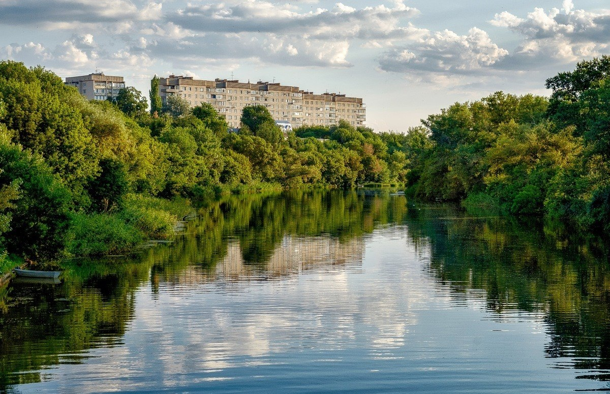

Добро пожаловать в Белую Калитву!
О городе
Белая Калитва - уютный и красивый город в Ростовской области России, расположенный в месте слияния рек Калитва и Лихая с Северским Донцом. Населенный пункт известен своим уникальным рельефом, развитой промышленностью и глубокими историческими корнями.
Здесь донские степи встречаются с крутыми скалистыми возвышенностями, создавая потрясающие пейзажи, которые привлекают туристов, альпинистов и любителей природы со всей страны.

Три реки
Город уникально расположен в месте, где Калитва и Лихая впадают в величественный Северский Донец.
Казачий дух
Основанный как казачья станица в 1703 году, город свято хранит традиции и культуру донского казачества.
Природный туризм
Уникальные скальные массивы делают этот район одним из лучших мест для скалолазания и треккинга в регионе.